OURS
Vision + Bilateral Tactile
VIDEO SLOT READY
matched hardware evaluation pending
ours_tactile.mp4
AX Challenge · UMI → TCP → Touch
UMI 영상에서 TCP 위치·회전 라벨의 이상치를 정제하고, 양쪽 DIGIT 센서로 접촉을 읽은 뒤 실제 로봇 영상 비교로 이어지는 과정을 시각적으로 정리했습니다.
AX Challenge edition · 저자와 최종 제출 정보는 확정 후 교체합니다.
00 · VISUAL CONTENTS
그림을 눌러 UMI→TCP 데이터 전처리, 좌·우 센서, 실제 영상 비교로 이동합니다.
01 · POSITION OUTLIERS
평면 marker pose ambiguity와 짧게 군집된 depth spike를 대표 episode에서 추적했습니다.
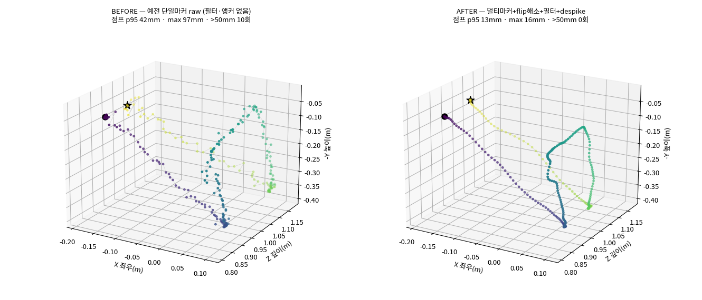
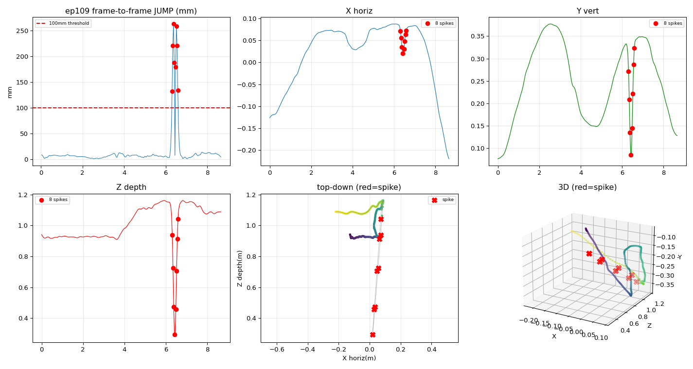
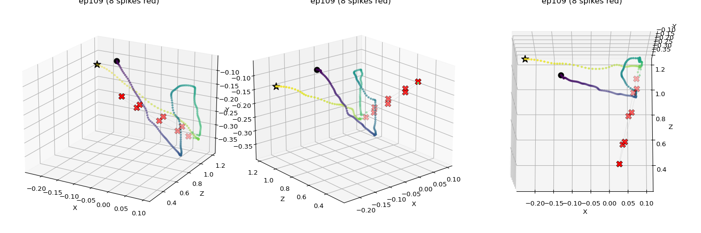
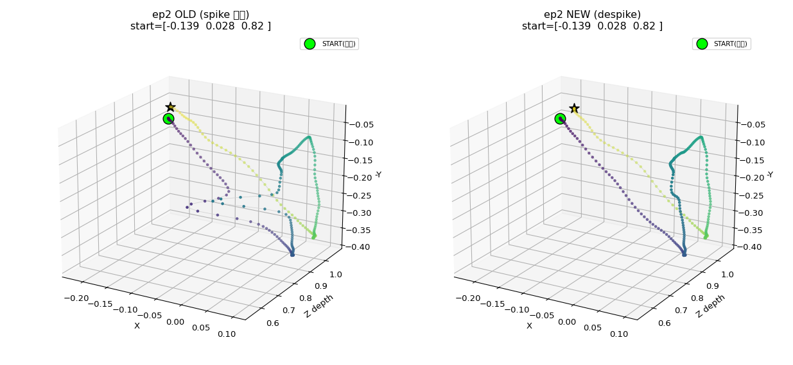
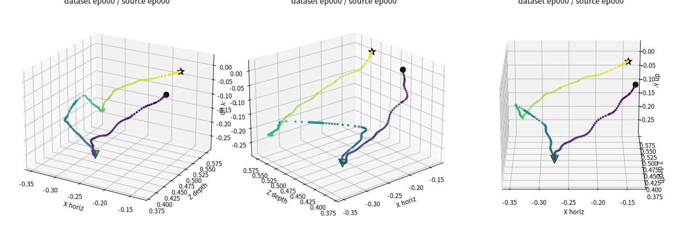
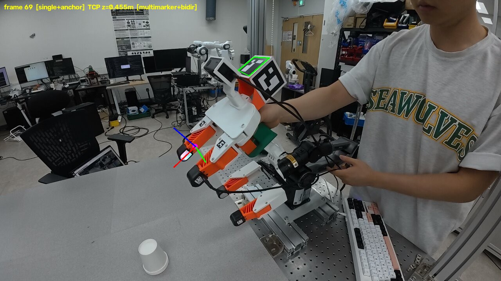
02 · ROTATION OUTLIERS
Euler 성분의 모양이 아니라 representation-independent SO(3) geodesic으로 branch flip을 찾았습니다.
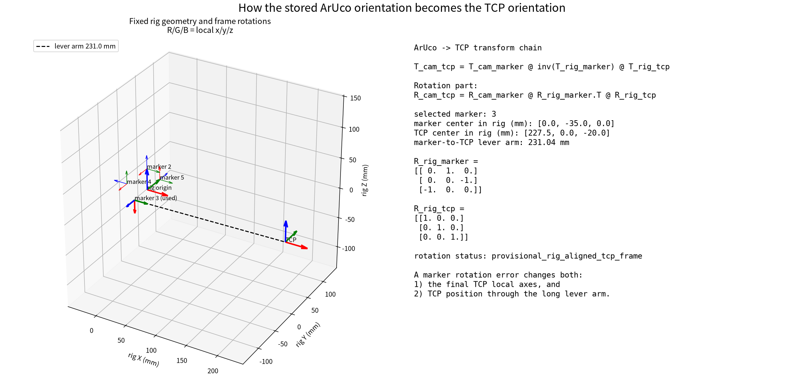
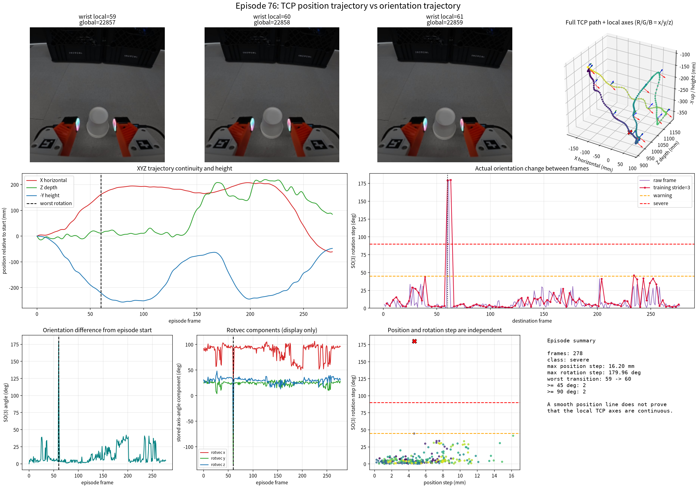
RESIDUAL CASE · EP108
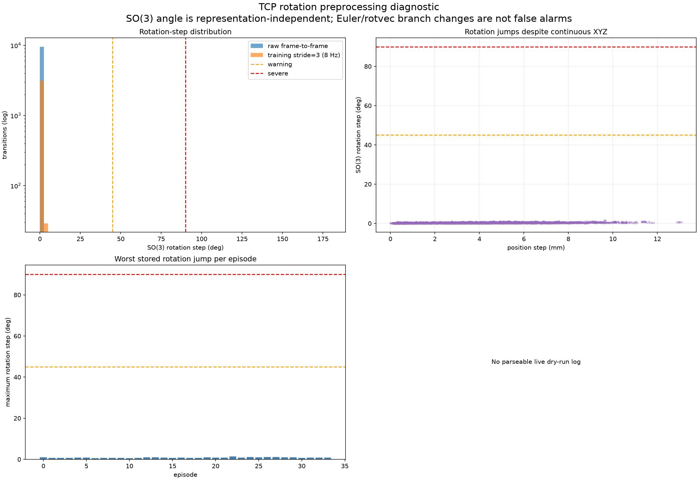
Retarget v3
34 / 34offline strict IK accepted03 · BILATERAL DIGIT SENSOR
출력은 물리 힘 N이 아니라 각 DIGIT 기준의 relative deformation pseudo-percent입니다.
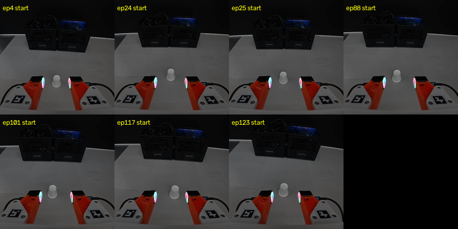
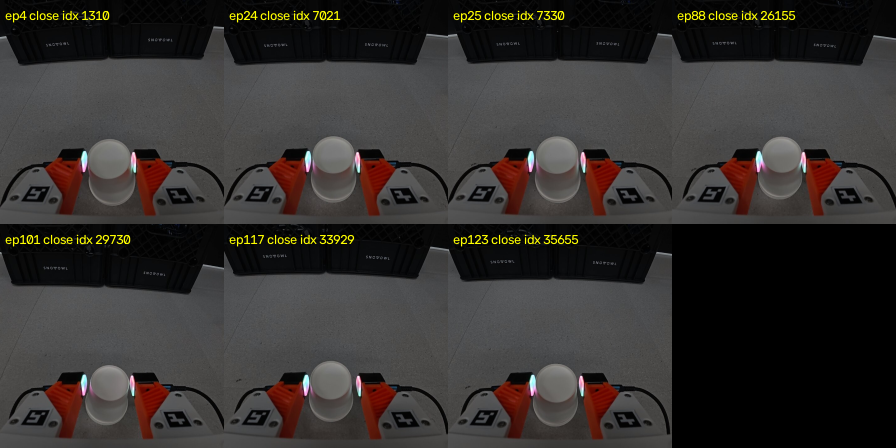
FROZEN BASE + TA REGRESSOR
Vision action policy + bilateral force image model Simple fusion research baseline · BiCA candidate also evaluated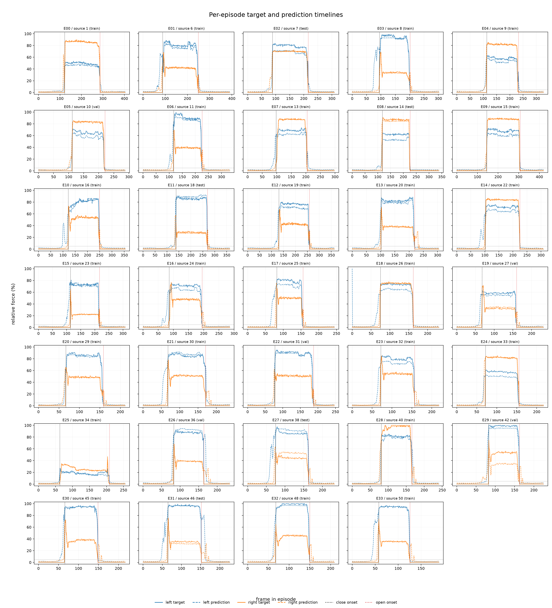
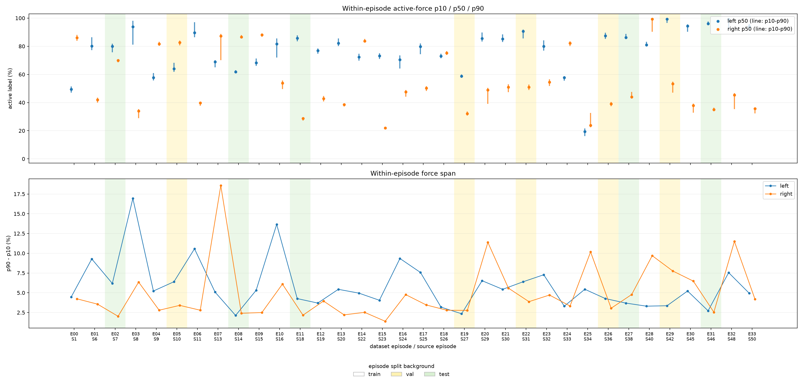
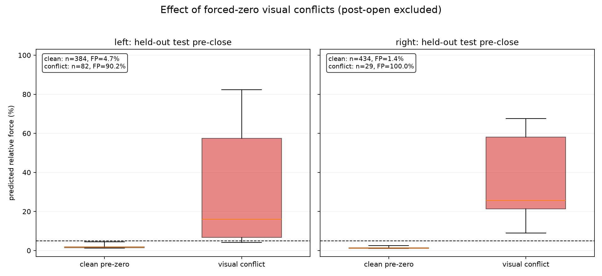
04 · REAL ROBOT VIDEO · A/B IN PROGRESS
matched hardware evaluation pending
ours_tactile.mp4
matched hardware evaluation pending
vision_only.mp4